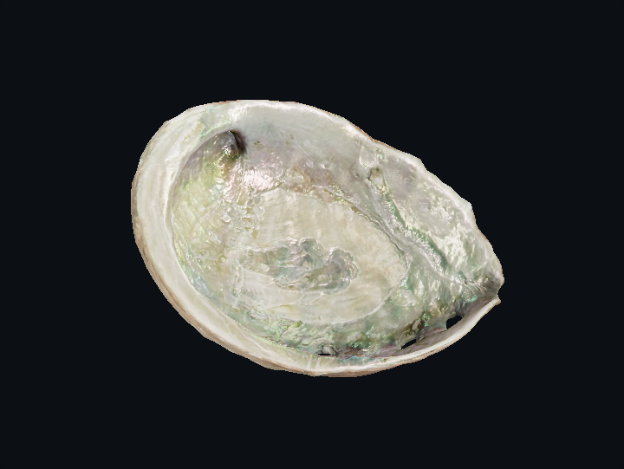

What the map actually contains
The iridescence texture packs two data channels. Shown here as greyscale, read without colour conversion.
Evidence chain
- Problem
- Iridescent “nacre” is easy to fake from one hero angle. Before inventing a procedural nacre, the lab needs a documented, licensed reference whose channels and response can be checked.
- Decision
- Use the Khronos IridescenceAbalone asset as a comparison fixture in an isolated Three.js lane (conflict ledger C-01, C-03), not as the gallery’s material and not via a dependency migration.
- Implementation
- Pinned asset commit + SHA-256 verified before parsing; Three.js
0.186.1locked in this folder only; neutral control, R-only and G-only isolation fixtures; three controlled captures and a machine-readable receipt produced by one command. - Human-control boundary
- The script measures load, channel colour-space and pixel differences. Whether the response looks right at neutral, grazing and sweep is a human review; the trial cannot pass without a named reviewer.
- Claimed
- Only what receipt.json marks measured.
- Not claimed
- Measured abalone optics, physical calibration, mineral simulation, an original material, mobile optimisation, frame rates, or KHR extension conformance of any WebGL2 proxy.
Attribution
IridescenceAbalone — model © 2015 Abby Crawford, material © 2023 Eric Chadwick, CC BY 4.0. Source: KhronosGroup/glTF-Sample-Assets @ 4995a63. Unmodified asset; rendered with altered material parameters for the control and isolation fixtures.